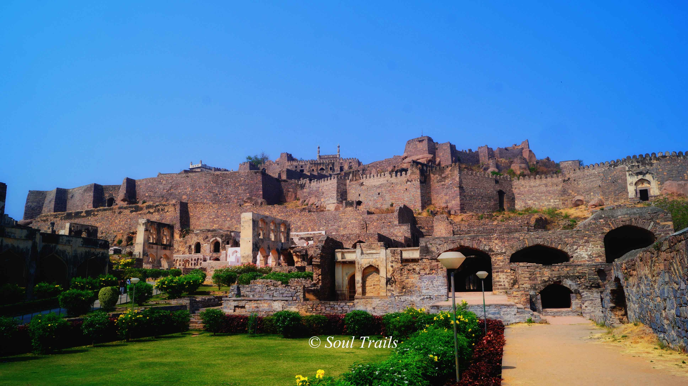
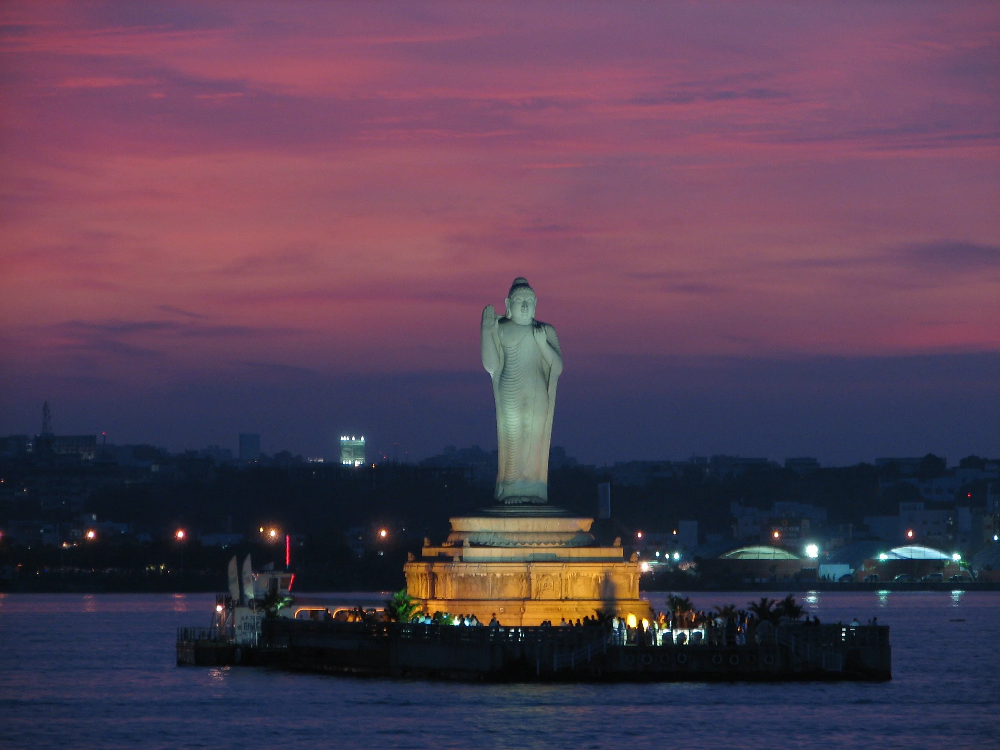
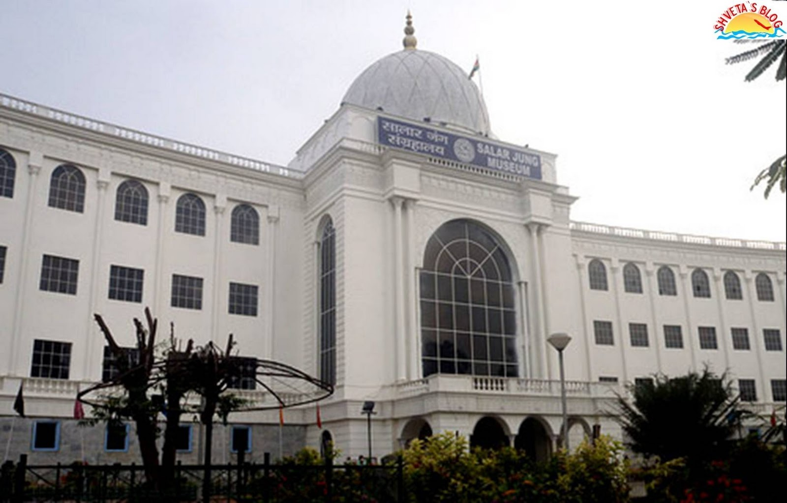

Hyderabad is the capital city of the Indian state of Telangana. It is known for its rich history, culture, and cuisine.
The city has a population of over 10 million people, making it one of the most populous cities in India.
CHARMINAR
History
Hyderabad was founded by the Quṭb Shāhī sultans of Golconda, under whom the kingdom of Golconda attained
a position of importance second only to that of the Mughal Empire to the north. The old fortress town of Golconda had proved inadequate
as the kingdom’s capital, and so about 1591 Muḥammad Qulī Quṭb Shah, the fifth of the Quṭb Shahs, built a new city call
ed Hyderabad on the east bank of the Musi River, a short distance from old Golconda. The Charminar, a grand architectural composition
in Indo-Saracenic style with open arches and four minarets, is regarded as the supreme achievement of the Quṭb Shāhī period. It formed the
centrepiece around which the city was planned. The Mecca Mosque, which was built later, can accommodate 10,000 people. The
mosque was the site of a bombing attack in 2007 that killed several Muslims and injured many others. The incident aggravated
Muslim-Hindu tensions in the city, which has experienced per
iodic outbreaks of violence over the years.
Hyderabad was known for its beauty and affluence, but that glory lasted only as long as the Quṭb Shāhī dynasty. The Mughals
conquered Hyderabad in 1685. The Mughal occupation was accompanied by plunder and destruction and was followed by the intervention
of European powers in Indian affairs. In 1724 Āṣaf Jāh Nizam al-Mulk, the Mughal viceroy in the Deccan, declared independence.
That Deccan kingdom, with Hyderabad as its capital, came to be known as the princely state of Hyderabad. The Āṣaf Jāhīs,
during the 19th century, started to rebuild, expanding to the north of the old city across the Musi. Farther north, Secunderabad
grew as a British cantonment (military facility), connected to Hyderabad by a bund (embankment) 1 mile (1.6 km) long on Husain
Sagar Lake. The bund now serves as a promenade and is the pride of the
city. Many new structures, reflecting a beautiful blend of Hindu and Muslim styles, have been added along it.
Tourist Attractions
Charminar
The Charminar is a monument located in Hyderabad, Telangana, India. Constructed in 1591, the
landmark is a symbol of Hyderabad and officially incorporated in the emblem of Telangana. The Charminar's long history includes the existence
of a mosque on its top floor for more than 425 years. While both historically and religiously significant, it is also known for its popular and busy
local markets surrounding the structure, and has become one of the most frequented tourist attractions in Hyderabad.
Charminar is also a site of numerous festival celebrations, such as Eid-ul-adha and Eid al-Fitr, as it is adjacent to the city's
main mosque, the Makkah Masjid.
Golconda Fort

Golconda (Telugu: గోల్కొండ, romanized: Gōlkōnḍa) is a historic fortress and ruined city located in the western outskirts of Hyderabad,
Telangana, India.[1][2] It was originally called Mankal (mānugallu).[1][3] The fort was originally built by Kakatiya ruler Pratāparudra in the 11th
century out of mud walls.[3] It was ceded to the Bahmani Kings by Deo Rai, Rajah of Warangal during the reign of Sultan Muhammad Shah (1358–1375 A.D.)
of the Bahmani Sultanate.[3] Following the death of Sultan Mahmood Shah, the Sultanate disintegrated and Sultan Quli, who had been appointed as the Governor
of Hyderabad by the Bahmani Kings, fortified city and made it the capital of the Golconda Sultanate. Because of the vicinity of diamond mines, especially
Kollur Mine, Golconda flourished as a trade centre of large diamonds known as Golconda Diamonds. Golconda fort is currently abandoned and in ruins.
Hussain Sagar Lake
 Hussain Sagar (alternatively referred to as Tank Bund;[1] Telugu pronunciation: [ɦusen sɑːgər]) is a heart-shaped lake in Hyderabad,
Telangana, built by Ibrahim Quli Qutb Shah in 1563. It is spread across an area of 5.7 square kilometres (2.2 sq mi) and is fed by the River Musi. A large
monolithic statue of the Gautama Buddha, erected in 1992, stands on Gibraltar Rock in the middle of the lake. It also separates the city centre of Hyderabad
from its neighbourhood Secunderabad. The maximum depth of the lake is 32 feet (9.8 m)
Salar Jung Museum

The Salar Jung Museum is an art museum located at Dar-ul-Shifa, on the southern bank of the Musi River in the city of Hyderabad, Telangana,
India. It is one of the notable National Museums of India.[1] Originally a private art collection of the Salar Jung family, it was endowed to the nation after
the death of Salar Jung III. It was inaugurated on 16 December 1951.
It has a collection of sculptures, paintings, carvings, textiles, manuscripts, ceramics, metallic artifacts, carpets, clocks, and furniture from Japan,
China, Burma, Nepal, India, Persia, Egypt, Europe, and North America. It is one of the largest museums in the world.
Chowmahalla Palace
Chowmahalla Palace or Chowmahallat is the palace of the Nizams of Hyderabad State located in Hyderabad, Telangana, India.
It was the seat of power of the Asaf Jahi dynasty (1720-1948) and was the official residence of the Nizams of Hyderabad during their reign. Presently
the palace is converted into a museum but the ownership still lies with the family.
The palaces is constructed at the location of an earlier existing palaces of the Qutb Shahi Dynasty and Asaf Jahi Dynasty
close to the Charminar. Construction of the palace as it stands today was started by Nizam Ali Khan Asaf Jah II [3] in 1769. He ordered to built
four palace from which the nomenclature of Chau Mahalla was acquired.[4]The word chār or chahār, and its variation chow, means "four" and the word mahal
means "palace" in Urdu, Hindi and Persian.